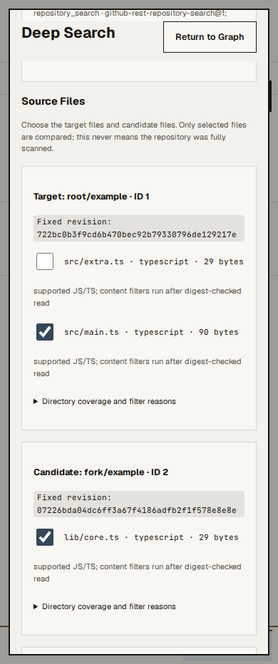
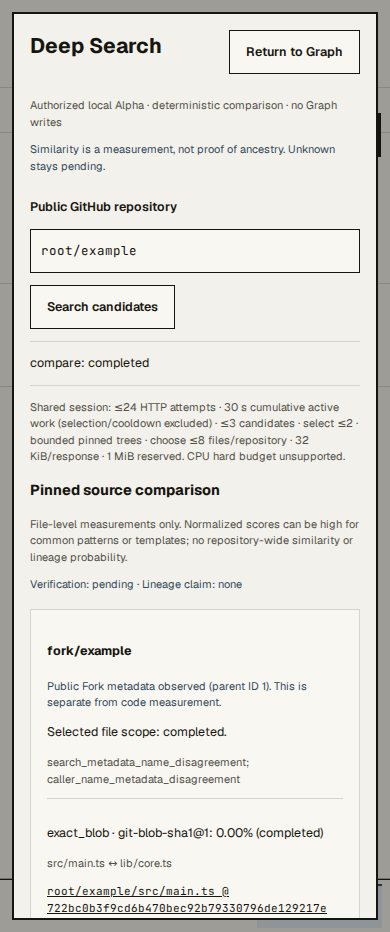
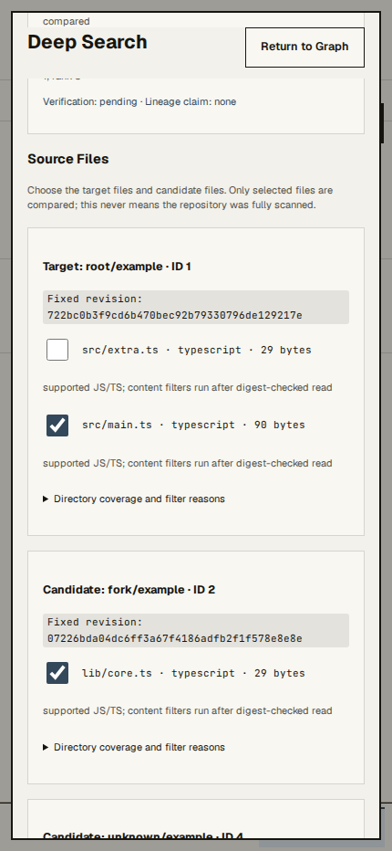
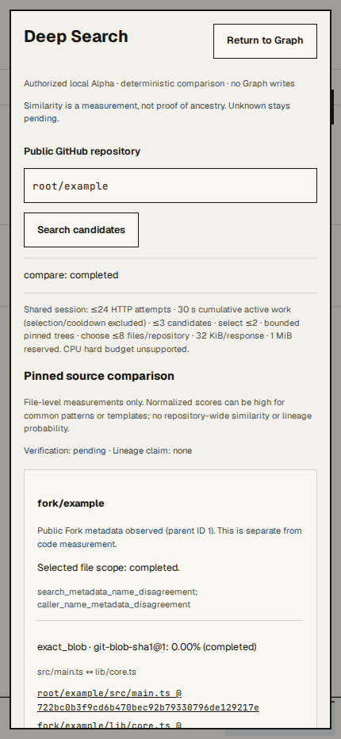
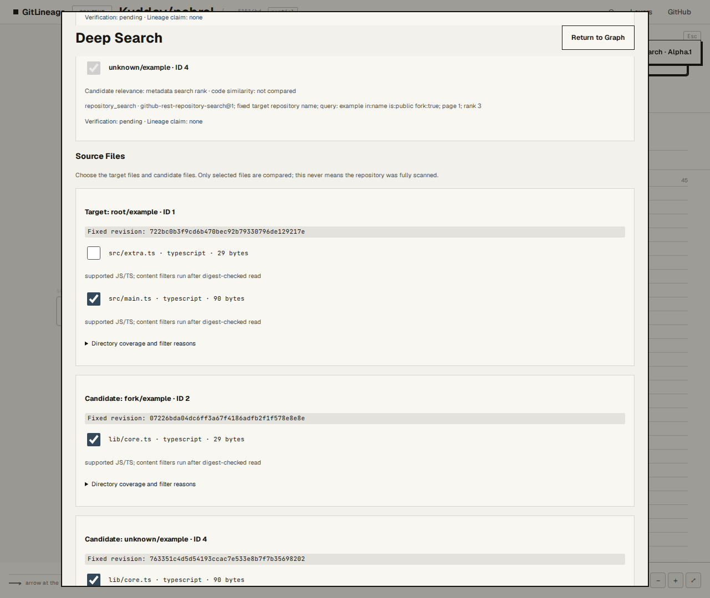
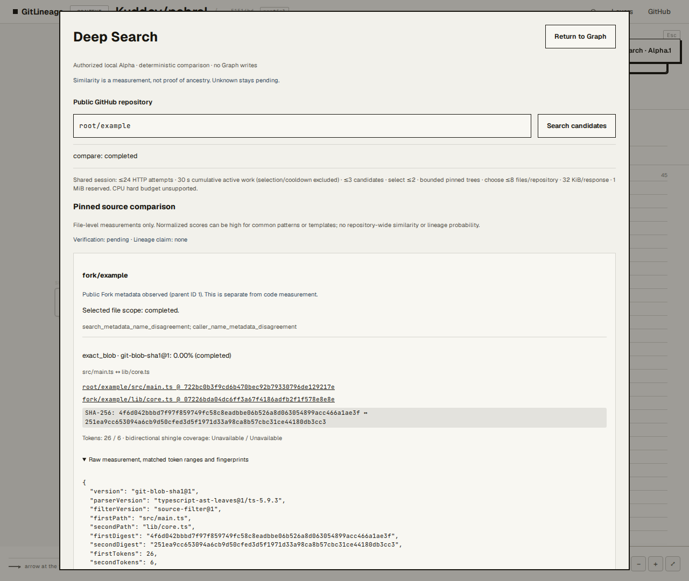
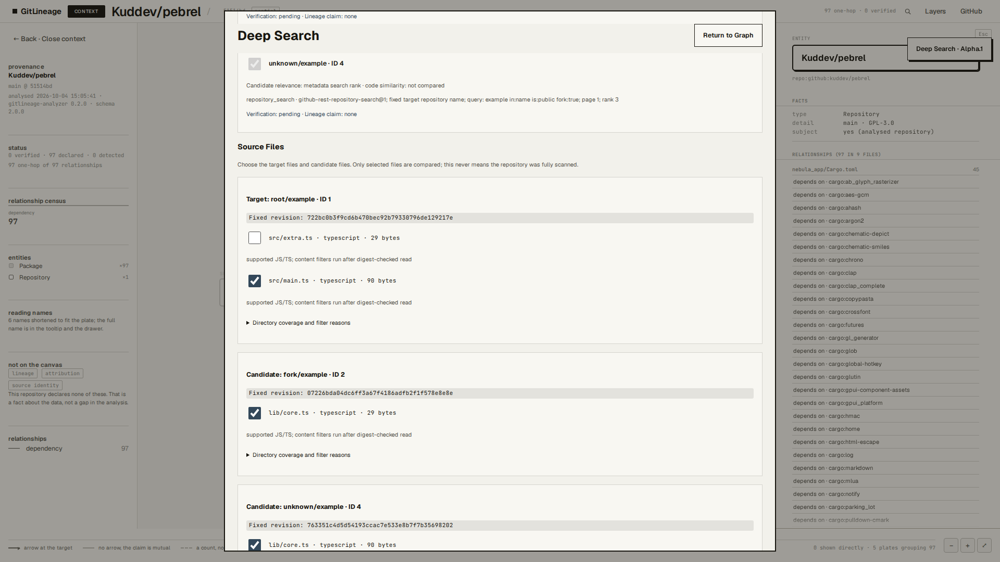
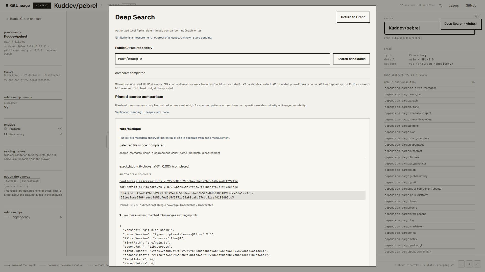

GitLineage M2 Alpha.1
Fixed official API Mock / real worker / WSL Chromium. No live API or physical-device claim. Source choice, comparison and downloaded export validated.
390px

Source Files / editable choice
Pinned comparison / pending, none430px

Source Files / editable choice
Pinned comparison / pending, none1280px

Source Files / editable choice
Pinned comparison / pending, none1920px

Source Files / editable choice
Pinned comparison / pending, none